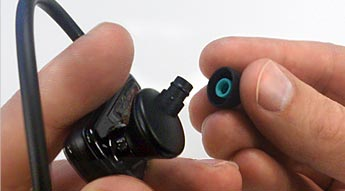
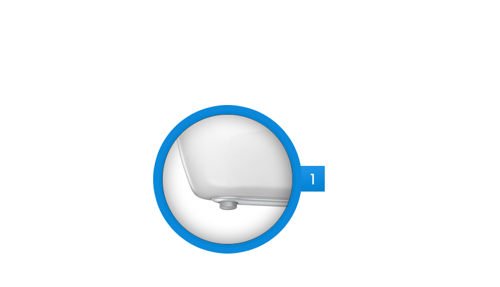

W Series Sports Walkman®
The high-performance music player that's wire-free, wearable and waterproof.
$99.99
Shop Now
New Depths
Swim to your own soundtrack.
Don't just take it to the pool. Take it under water. The new W Series Sports Walkman® can be completely submerged to keep the music playing through every lap.
Operates at 2 METERSFreedom to move
Comfortable, secure, never in your way.
Lightweight and wearable, the W Series Walkman® features a hands-free no-wire design and earpieces that stay in place even during intense workouts.
Wrap-around design
The W Series Walkman® is designed to wrap around your head for compact no-wire freedom.

Secure Fit
Replaceable earbuds and an adjustment band give you a personalized, secure fit. Ships with small, medium and large earbuds.

Explore Controls
It's easy to use
Just drag, drop, and go.
Spend less time organizing music and more time doing what you love. Just connect to a computer to drag and drop the songs that drive you.
-
Just drag and drop MP3s from Windows® Media Player, Internet Explorer® or iTunes® on a PC or Mac.
Find your favorite songs on the run.
Just hold down the play button for two seconds to scan the chorus of your best workout songs.
High-performance Sound Quality
13.5mm drivers deliver deep bass and dynamic audio reproduction.
13.5mm speakers
Frequently Asked Questions
How long can the W Series Sports Walkman® stay submerged?
The W Series Sports Walkman® can stay continuously submerged at a depth of up to 2m (6.6 feet).
Will the W Series Sports Walkman® work in salt water?
No, the W Series Sports Walkman® is fully functional in freshwater, but can be damaged if submerged in salt water.
How much music does this hold?
Approximately 1,000 songs.(128kbps). 1 song = approximately 4 minutes.
W Series Walkman®
Wire-free, lightweight and wearable, this submergible Sports Walkman® helps energize your workout with your favorite songs without getting in the way.
- Can be continuously submerged at depths up to 2 meters.
- ZAPPIN™ technology lets you easily find songs on the run.
- High-quality audio with 13.5mm driver for deep bass performance.
- Superb battery life delivers up to eight hours of power on a full charge.
- Quick Charge gives you an hour of playback in only three minutes.
- USB connectivity makes it easy to connect to your computer.
- Easily drag and drop favorite songs from iTunes or Windows Media.
- Stores hours of music with 4 GB memory.
- Audio Formats: MP3 / WMA / L-PCM / AAC
- Battery Charging: 1.5 Hrs (full charge)
- Power Type: Rechargeable Li-ion battery
- Battery Indicator: LED Battery Life Indicator
- Headphones: Closed, dynamic 13.5mm
- Battery Life: MP3 @ 128kbps = 8 Hrs
1. Actual battery life may vary based on product settings, usage patterns and environmental conditions. Battery capacity decreases over time and use.
2. 1 GB equals 1 billion bytes, a portion of which is used for data management functions.
3. Waterproof certified to the IPX8 standards, submersible up to 2 meters.
© 2014 Sony Electronics Inc. All rights reserved. Reproduction in whole or in part without written permission is prohibited. Sony, Walkman, ZAPPIN and their respective logos are trademarks of Sony. iTunes is a trademark of Apple Inc. Windows and Internet Explorer are trademarks of Microsoft Corporation. All other trademarks are trademarks of their respective owners.